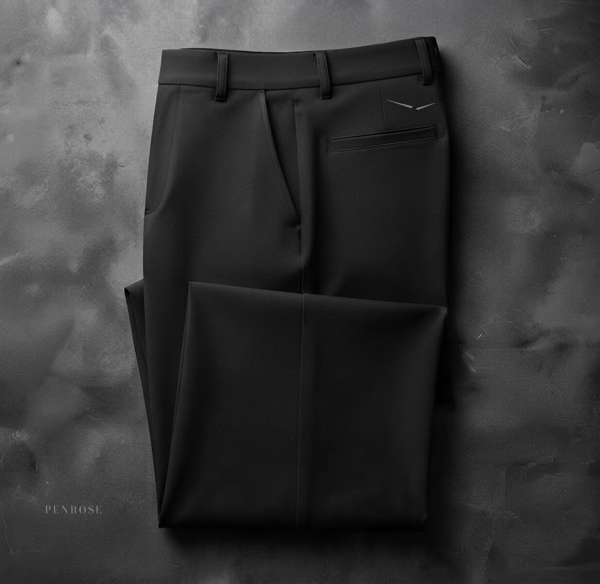
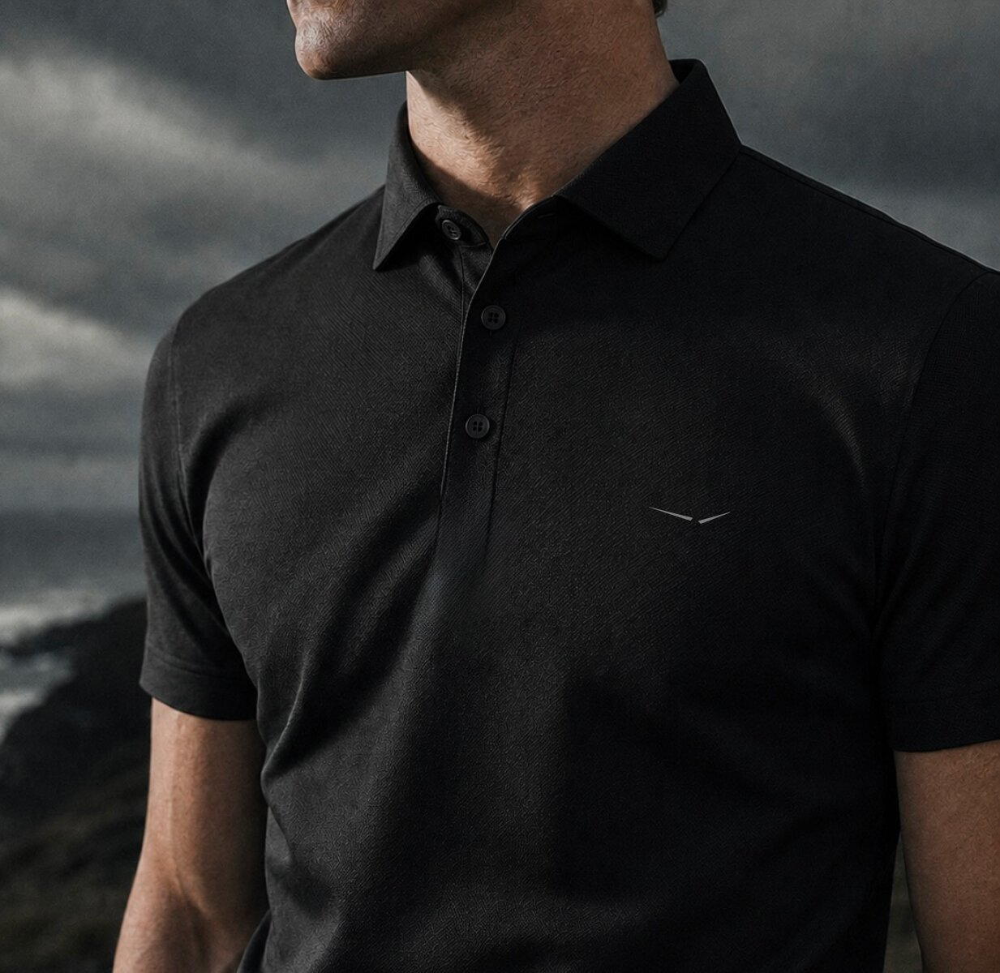
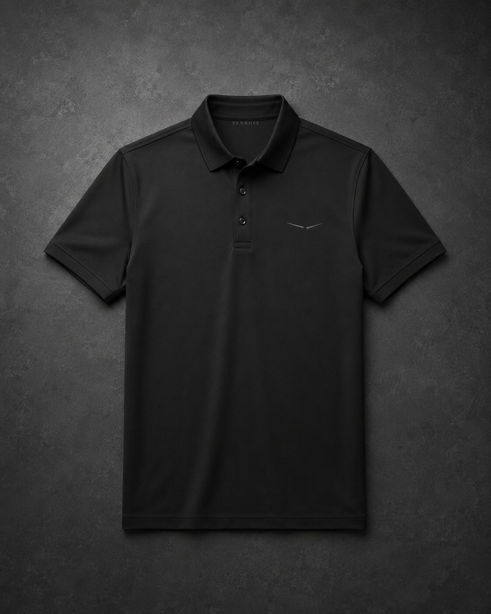
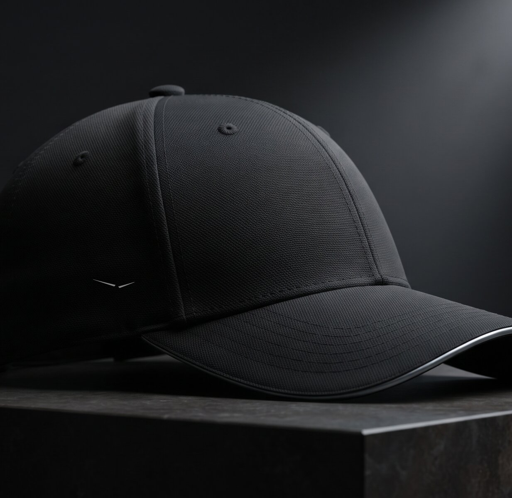
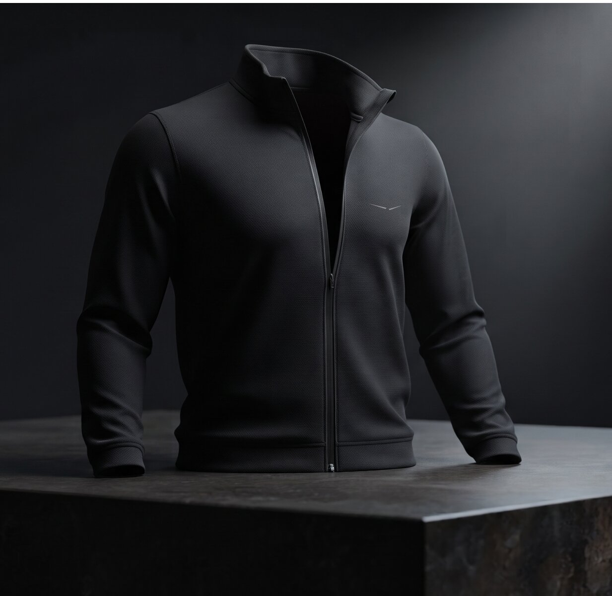
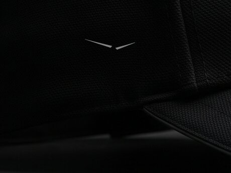
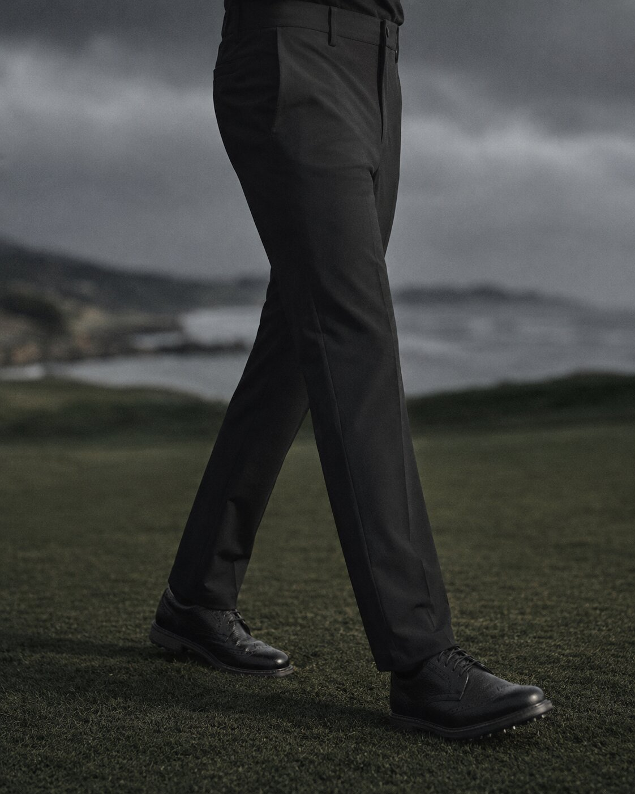
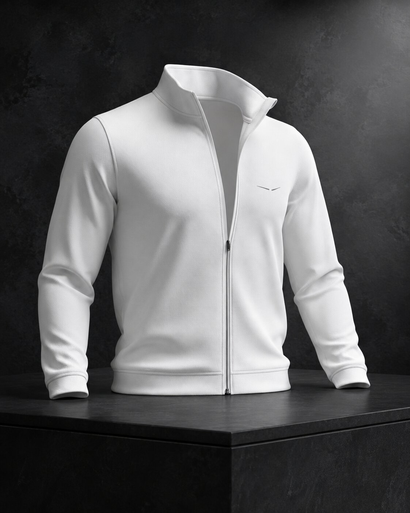

02 / Core Performance Pant
Structure in motion.
Four-way stretch twill with a pressed front line, clean waistband, and a restrained taper. The wing sits above the left rear pocket.

Release 01 / March 2027
A closed palette and a precise silhouette. Every piece sits beside the next without negotiation.
Design position
Release 01 begins with the garments a player reaches for most. Each is engineered for movement, stripped of reflective finishes and excess branding, and cut to remain appropriate when the round is over.

01 / Core Performance Polo
Matte technical jersey with four-way mechanical stretch and moisture transport. The collar is engineered to recover its shape; the placket lies flat beneath a mid-layer.

02 / Core Performance Pant
Four-way stretch twill with a pressed front line, clean waistband, and a restrained taper. The wing sits above the left rear pocket.

03 / Performance Cap
Low structured crown, pre-curved brim, and a single wing rising along the left panel. No front-facing mark.

04 / Hydroshell
Matte, seam-sealed protection with a quiet face and standing collar. Designed as the first layer on and the last layer off.

Mark / Placement
The Penrose wing is never enlarged to fill space. It is positioned for recognition, not attention.


Private allocation
Access includes advance sizing guidance and first allocation across the complete release.